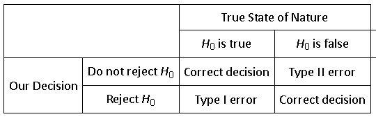
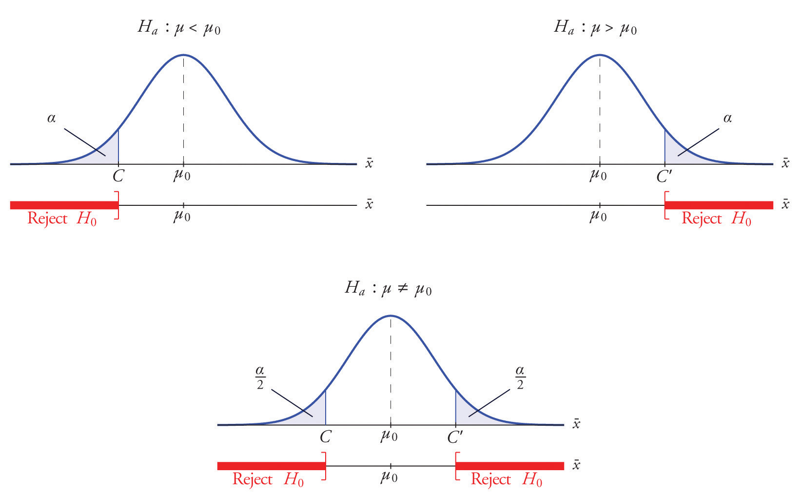
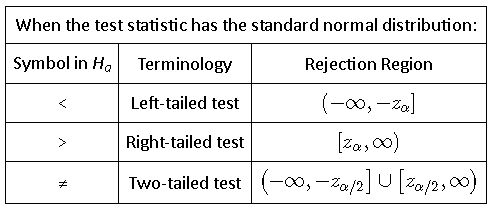

ECON 2B03, Winter 2026
Part C | Lecture 4
Chris Muris, McMaster University

Exercise: cannabis vendor and testing errors
A cannabis vendor claims that the population mean amount per unit is 1 gram. In reality, the true mean is only 0.9 gram.
Exercise: choosing a significance level
Two firms are considering product-quality tests.


Three critical values worth remembering
Exercise: identify the rejection region
Suppose you are testing the mean waiting time at a clinic against a benchmark of 18 minutes.
For each alternative hypothesis, state where the rejection region must lie.
The alternative hypothesis determines where evidence against \(H_0\) can appear.
Machine recalibration
Why this makes sense
Growth hormone for cows
Worked example (adapted from OpenIntro): textbook prices
Exercise: repair times
The standard time for a repair is 1 hour. A sample of 30 repairs has mean 0.86 hour and standard deviation 0.32 hour.
Exercise (adapted from Introductory Statistics): placement exam
The historical mean score on a placement exam is 14.3. A sample of 30 students taking a revised version has mean 14.6 and sample standard deviation 2.4.
Exercise: respirator testing
A manufacturer claims its respirator delivers pure air for 75 minutes on average. A regulator is concerned that the true mean may be lower. In a large sample, the standardized test statistic is \(Z=-1.91\).
Exercise (adapted from OpenIntro): significance and decisions
An analyst tests \(H_0:\mu=50\) against \(H_a:\mu\neq50\) and computes the test statistic \(Z=2.21\).
These slides started from J. S. Racine’s slides for ECON2B03 at McMaster University.
Readings are from
References